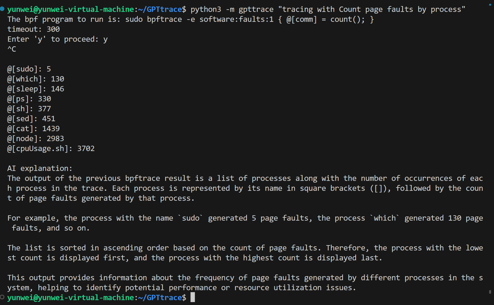
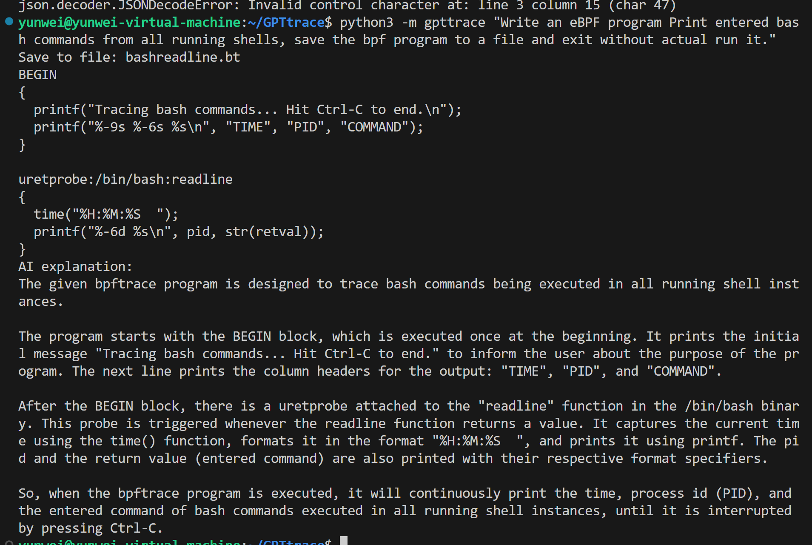
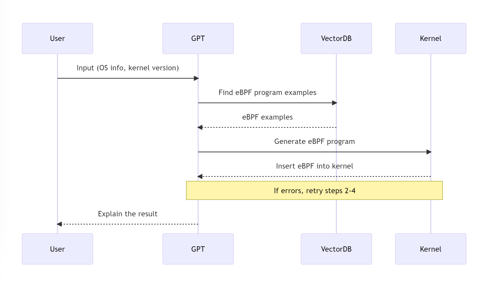
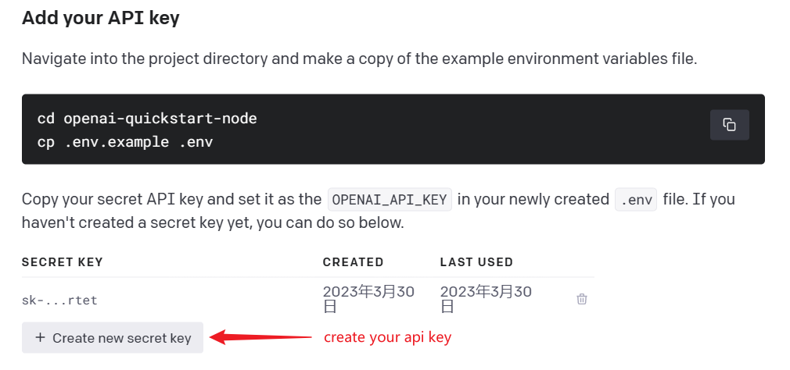

GPTtrace 🤖


An experiment for generating eBPF programs and tracing with GPT and natural language
Want the online version? please see GPTtrace-web for online demo!
Checkout our paper Kgent: Kernel Extensions Large Language Model Agent in eBPF'24!
Key Features 💡
Interact and Tracing your Linux with natural language
example: tracing with Count page faults by process

- start tracing with natural language
- let AI explain the result to you
Generate eBPF programs with natural language
example: Write an eBPF program Print entered bash commands from all running shells, save the bpf program to a file and exit without actual run it.

We use examples from bpftrace tools to create vector store and search.
For more detail documents and tutorials about how to write eBPF programs, please refer to: bpf-developer-tutorial (a libbpf tool tutorial to teach ChatGPT to write eBPF programs)
Choose the right bcc command line tool to complete the tracking task
Use the right bcc tools to trace the kernel
$ python3 gpttrace "Trace allocations and display each individual allocator function call"
Run: sudo memleak-bpfcc --trace
Attaching to kernel allocators, Ctrl+C to quit.
(b'Relay(35)', 402, 6, b'd...1', 20299.252425, b'alloc exited, size = 4096, result = ffff8881009cc000')
(b'Relay(35)', 402, 6, b'd...1', 20299.252425, b'free entered, address = ffff8881009cc000, size = 4096')
(b'Relay(35)', 402, 6, b'd...1', 20299.252426, b'free entered, address = 588a6f, size = 4096')
(b'Relay(35)', 402, 6, b'd...1', 20299.252427, b'alloc entered, size = 4096')
(b'Relay(35)', 402, 6, b'd...1', 20299.252427, b'alloc exited, size = 4096, result = ffff8881009cc000')
(b'Relay(35)', 402, 6, b'd...1', 20299.252428, b'free entered, address = ffff8881009cc000, size = 4096')
(b'sudo', 6938, 10, b'd...1', 20299.252437, b'alloc entered, size = 2048')
(b'sudo', 6938, 10, b'd...1', 20299.252439, b'alloc exited, size = 2048, result = ffff88822e845800')
(b'node', 410, 18, b'd...1', 20299.252455, b'alloc entered, size = 256')
(b'node', 410, 18, b'd...1', 20299.252457, b'alloc exited, size = 256, result = ffff8882e9b66400')
(b'node', 410, 18, b'd...1', 20299.252458, b'alloc entered, size = 2048')
How it works

- User Input: The user provides their operating system information and kernel version. This information is crucial as it helps to tailor the eBPF program to the specific environment of the user.
- Prompt Construction: The user's input, along with the OS info and kernel version, is used to construct a prompt. This prompt is designed to guide the generation of the eBPF program.
- Vector Database Query: The constructed prompt is used to query the Vector Database for eBPF program examples. These examples serve as a basis for generating the eBPF program that will be inserted into the kernel.
- Hook Point Identification: The GPT API is used to identify potential hook points in the eBPF program. These hook points are locations in the code where the eBPF program can be inseted to monitor or modify the behavior of the kernel.
- eBPF Program Generation: The identified hook points, along with the examples from the Vector Database, are used to generate the eBPF program. This program is designed to be inserted into the kernel to perform the desired tracing tasks.
- Kernel Insertion: The generated eBPF program is inserted into the kernel. If there are any errors during this process, the tool will retry the steps from querying the Vector Database to kernel insertion a few times.
- Result Explanation: Once the eBPF program is successfully inserted into the kernel, the AI will explain the result to the user. This includes an explanation of what the eBPF program is doing and how it is interacting with the kernel.
This process ensures that the eBPF program is tailored to the user's specific environment and needs, and that the user understands how the program works and what it is doing.
Installation 🔧
Usage and Setup 🛠
$ python3 -m gpttrace -h
usage: GPTtrace [-h] [-c CMD_NAME QUERY] [-v] [-k OPENAI_API_KEY]
input_string
Use ChatGPT to write eBPF programs (bpftrace, etc.)
positional arguments:
input_string Your question or request for a bpf program
options:
-h, --help show this help message and exit
-c CMD_NAME QUERY, --cmd CMD_NAME QUERY
Use the bcc tool to complete the trace task
-v, --verbose Show more details
-k OPENAI_API_KEY, --key OPENAI_API_KEY
Openai api key, see
`https://platform.openai.com/docs/quickstart/add-
your-api-key` or passed through `OPENAI_API_KEY`
First: login to ChatGPT
- Access https://platform.openai.com/docs/quickstart/add-your-api-key，then create your openai api key as following:

- Remember your key, and then set it to the environment variable
OPENAI_API_KEYor use the-koption.
start your tracing! 🚀
For example:
If the eBPF program cannot be loaded into the kernel, The error message will be used to correct ChatGPT, and the result will be printed to the console.
Examples
- Files opened by process
- Syscall count by program
- Read bytes by process:
- Read size distribution by process:
- Show per-second syscall rates:
- Trace disk size by process
- Count page faults by process
- Count LLC cache misses by process name and PID (uses PMCs):
- Profile user-level stacks at 99 Hertz, for PID 189:
- Files opened, for processes in the root cgroup-v2
Citation
@inproceedings{10.1145/3672197.3673434,
author = {Zheng, Yusheng and Yang, Yiwei and Chen, Maolin and Quinn, Andrew},
title = {Kgent: Kernel Extensions Large Language Model Agent},
year = {2024},
isbn = {9798400707124},
publisher = {Association for Computing Machinery},
address = {New York, NY, USA},
url = {https://doi.org/10.1145/3672197.3673434},
doi = {10.1145/3672197.3673434},
abstract = {The extended Berkeley Packet Filters (eBPF) ecosystem allows for the extension of Linux and Windows kernels, but writing eBPF programs is challenging due to the required knowledge of OS internals and programming limitations enforced by the eBPF verifier. These limitations ensure that only expert kernel developers can extend their kernels, making it difficult for junior sys admins, patch makers, and DevOps personnel to maintain extensions. This paper presents Kgent, an alternative framework that alleviates the difficulty of writing an eBPF program by allowing Kernel Extensions to be written in Natural language. Kgent uses recent advances in large language models (LLMs) to synthesize an eBPF program given a user's English language prompt. To ensure that LLM's output is semantically equivalent to the user's prompt, Kgent employs a combination of LLM-empowered program comprehension, symbolic execution, and a series of feedback loops. Kgent's key novelty is the combination of these techniques. In particular, the system uses symbolic execution in a novel structure that allows it to combine the results of program synthesis and program comprehension and build on the recent success that LLMs have shown for each of these tasks individually.To evaluate Kgent, we develop a new corpus of natural language prompts for eBPF programs. We show that Kgent produces correct eBPF programs on 80\%---which is an improvement of a factor of 2.67 compared to GPT-4 program synthesis baseline. Moreover, we find that Kgent very rarely synthesizes "false positive" eBPF programs--- i.e., eBPF programs that Kgent verifies as correct but manual inspection reveals to be semantically incorrect for the input prompt. The code for Kgent is publicly accessible at https://github.com/eunomia-bpf/KEN.},
booktitle = {Proceedings of the ACM SIGCOMM 2024 Workshop on EBPF and Kernel Extensions},
pages = {30–36},
numpages = {7},
keywords = {Large Language Model, Symbolic Execution, eBPF},
location = {Sydney, NSW, Australia},
series = {eBPF '24}
}
LICENSE
MIT
🔗 Links
- detail documents and tutorials about how we train ChatGPT to write eBPF programs: https://github.com/eunomia-bpf/bpf-developer-tutorial （基于 CO-RE (一次编写，到处运行） libbpf 的 eBPF 开发者教程：通过 20 个小工具一步步学习 eBPF（尝试教会 ChatGPT 编写 eBPF 程序）
- bpftrace: https://github.com/iovisor/bpftrace
- ChatGPT: https://chat.openai.com/